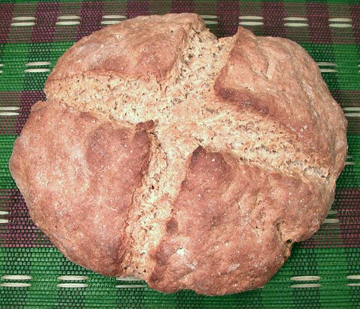
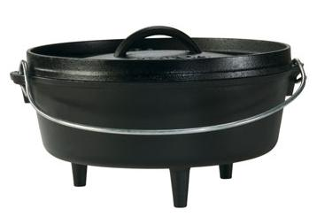

Lodge
Camp Dutch Oven / Bastable Oven
Note the ridge around the lid for holding hot coals and
the feet for standing it in hot coals - perfect for the Irish
farmhouse cooking environment. Note that Lodge's products are
now deeper than the one shown. Very similar products are offered by
Cabella's.
Photo borrowed from
Lodge Manufacturing.